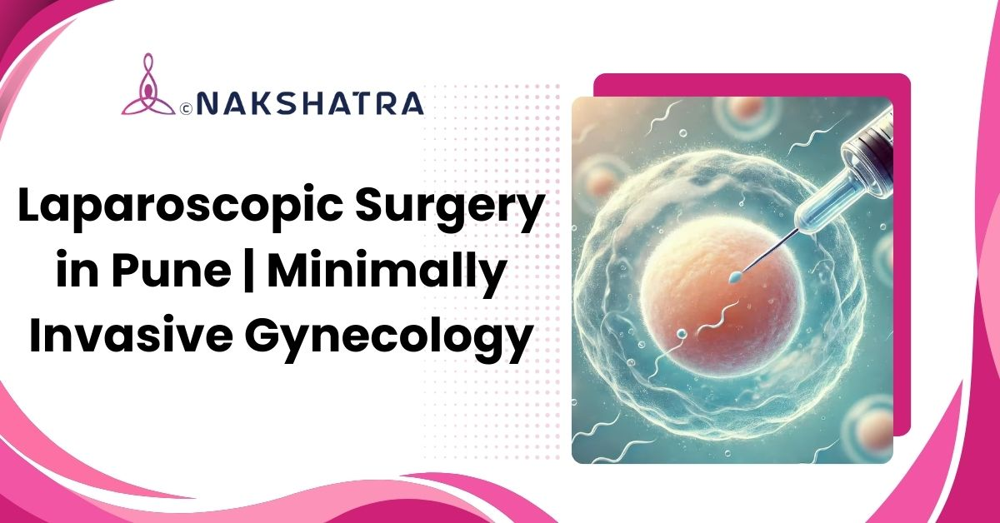

Diagnostic clarity
Helps evaluate pelvic organs when scans are inconclusive.
Minimally invasive gynecological laparoscopy for infertility evaluation, pelvic pain, fibroids, ovarian cysts, endometriosis, and adhesions.

Helps evaluate pelvic organs when scans are inconclusive.
Can treat fibroids, cysts, adhesions, and endometriosis where suitable.
Tiny incisions support minimal scarring and a smoother recovery experience.

Laparoscopy is a modern, minimally invasive surgical technique used to diagnose and treat gynaecological and abdominal conditions. At Nakshatra Clinic, experienced gynaecologists perform laparoscopic surgery for women, including treatment for fibroids, ovarian cysts, endometriosis, and infertility. Small incisions and a high-definition laparoscope support safe, precise, and comfortable procedures with faster recovery and minimal scarring.
Step-by-step view of how laparoscopic surgery is performed and monitored at Nakshatra IVF.
Usually performed under general anaesthesia to keep you pain-free; minor procedures may use local anaesthesia.
Small cuts near the navel or lower abdomen allow the scope and instruments to pass through.
CO2 gently expands the abdomen to create working space and help the surgeon see clearly.
A thin illuminated camera gives a real-time high-definition view of pelvic organs.
Micro-incisions allow removal of fibroids, cysts, adhesions, or tissue sampling with minimal trauma.
If needed, small samples are collected to check infection, abnormal cells, or other causes.
Instruments are removed and cuts are closed with sutures or tape, supporting lower infection risk.
Most patients go home the same day; complex surgeries may need an overnight stay for comfort and safety.
Common reasons why laparoscopy may be recommended in fertility and gynaecology care.
Laparoscopic surgery is a minimally invasive way to examine and treat abdominal and pelvic organs using a small camera and instruments, leading to faster recovery and minimal scarring.
Women with infertility, pelvic pain, fibroids, ovarian cysts, or abnormal bleeding may be candidates, especially when scans are inconclusive or surgery is required.
Diagnostic laparoscopy may take about 30-60 minutes. Operative procedures such as fibroid or cyst removal may take 1-3 hours depending on complexity.
It is done under general or local anaesthesia, so pain during surgery is minimal. Mild cramping or discomfort for a few days is common and manageable.
No. Incisions are tiny, about 1-4 mm, and usually heal quickly with barely visible marks.
Treating endometriosis, removing fibroids or cysts, and clearing adhesions can support natural conception and IVF planning.
Book a consultation at Nakshatra Clinic in Baner, Pune to discuss pelvic pain, fibroids, cysts, adhesions, endometriosis, or fertility-related surgical evaluation.